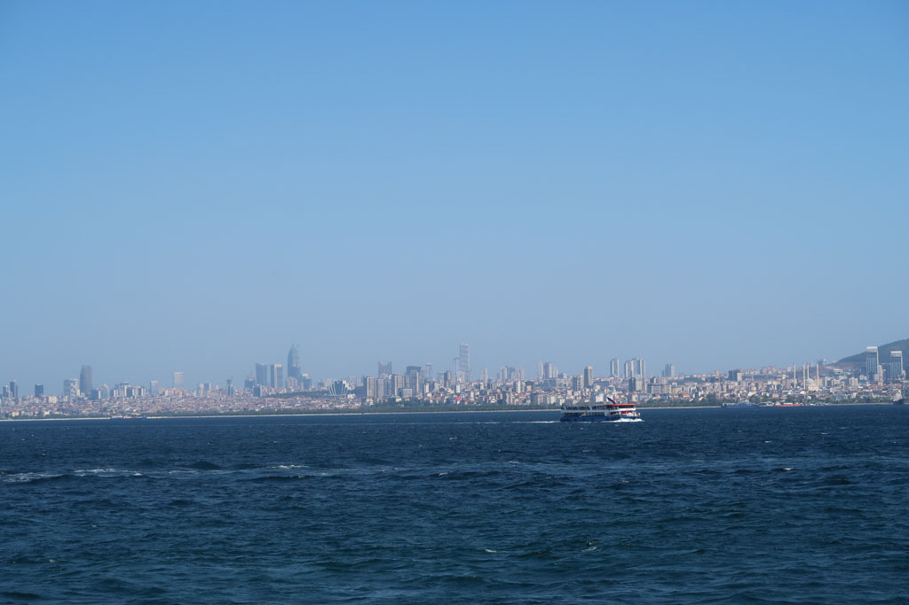
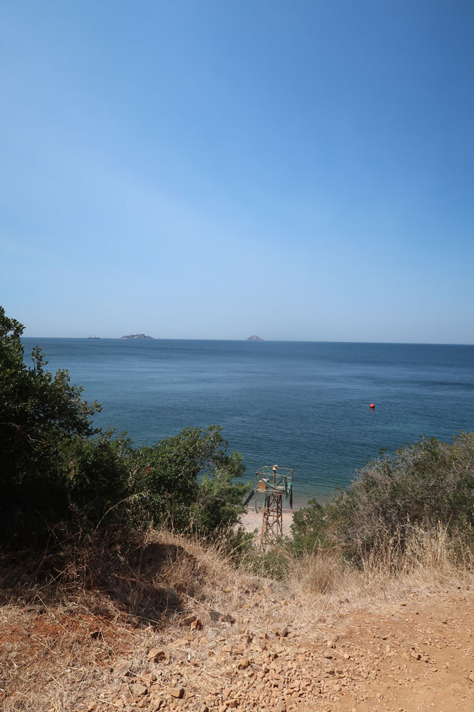

/ Istanbul suite

Dernière journée complète à Istanbul.
Grande excursion. Nous prenons le train de banlieue à la Sirkeci Train Station pour la station de Maltepe située sur la rive asiatique.
De là nous prenons un ferry pour une des iles aux princes, l’ile de Burgazadası. Nous faisons le tour de l’île par le nord pour rejoindre la plage de Madam Marta Koyu.

Passons un bon moment à nous prélasser et baigner avant de prendre le chemin du retour. Un ferry arrive, du coup nous ne mangeons pas et retournons directement sur Kadikoy
De ce que je me souviens, nous sommes retourné prendre un thé dans les jardins de la petite sainte Sophie (Église des Saints-Serge-et-Bacchus / Küçük Ayasofya Camii).
Après êtres revenus dans le quartier d’Eminönü nous sommes remonté profiter de la vue et de l’ambiance nocturne des jardins de la superbe mosquée Süleymaniye